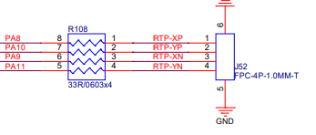

10.1.1. RTP调试配置¶
10.1.1.1. 概述¶
相比CTP电容触摸屏，RTP电阻触摸屏的配置和调试稍微简单，因为不需要额外的触摸屏驱动，只需要根据原理图设置对应的dts参数，然后把系统自带的RTP控制器驱动加载即可。
详细的原理介绍请参考 接口部分关于RTP的说明
10.1.1.2. 内核配置¶
在luban根目录下执行 make km (make kernel-menuconfig)，进入kernel的功能配置，按如下选择：
Linux
Device Drivers
Input device support
[*] Touchscreens
<*> Artinchip resistive touchscreen controller support
10.1.1.3. DTS参数配置¶
board.dts中的参数配置时请确保硬件连线和所配置参数一致，示例如下：
&rtp {
aic,max-pressure = <800>; //最大压感值，超过此值的坐标事件被忽略，按压力度越小该值越大，即值越大触摸越敏感
aic,x-plate = <235>; //用万用表测量触摸板X+ 和 X-之间的电阻值获得
pinctrl-names = "default"; //默认
pinctrl-0 = <&rtp_pins>; //RTP触摸板接线对应的PIN脚
status = "okay"; //RTP驱动使能标志
};
其中rtp_pins定义在d211-pinctrl.dtsi,4个pin脚需要分别对应RTP屏的X+ 、Y+ 、X- 、Y- 需要硬件确认无误。
rtp_pins: rtp-0 {
pins {
pinmux = <AIC_PINMUX('A', 8, 2)>,
<AIC_PINMUX('A', 9, 2)>,
<AIC_PINMUX('A', 10, 2)>,
<AIC_PINMUX('A', 11, 2)>;
};
};
硬件接线示例图如下：

注意
请务必确保dts所配置的参数和引脚与硬件原理图一致
10.1.1.4. 调试¶
测量硬件通路
测量硬件通路是否正常，测量电压信号是否正常
查看打印信息
打开调试选项，系统启动时看是否有异常打印
Linux Kernel hacking Artinchip Debug [*] RTP driver debug查看节点信息
在RTP初始化成功后，会在sysfs中注册生成一个status节点，其中打印了当前的RTP配置及状态信息：
# cat /sys/devices/platform/soc/19252000.rtp/status In RTP controller V1.00: Mode 0/2, RTP enale 0, Press detect enable 0 Manual mode status 0 Pressure enable 1, max 800, x-plate 235, y-plate 0 Point num: 1, Sample period: 0, Fuzz: 0
获取坐标信息
如果系统有编译getevent工具，触摸屏有触摸时进行坐标的打印
# getevent获取设备信息
# cat /proc/bus/input/devices 例如： I: Bus=0019 Vendor=0000 Product=0001 Version=0000 N: Name="Power Button" P: Phys=LNXPWRBN/button/input0 S: Sysfs=/devices/LNXSYSTM:00/LNXPWRBN:00/input/input0 U: Uniq= H: Handlers=kbd event0 B: PROP=0 B: EV=3 B: KEY=10000000000000 0 I: Bus=0011 Vendor=0001 Product=0001 Version=ab41 N: Name="AT Translated Set 2 keyboard" P: Phys=isa0060/serio0/input0 S: Sysfs=/devices/platform/i8042/serio0/input/input1 U: Uniq= H: Handlers=sysrq kbd event1 leds B: PROP=0 B: EV=120013 B: KEY=402000000 3803078f800d001 feffffdfffefffff fffffffffffffffe B: MSC=10 B: LED=7